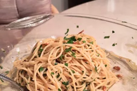

Spaghetti

Description
This is a simple yet flawless dish: easy to make; great taste; many variations.
The only drawback is that it's heavy on carbs.
Ingredients
- Spaghetti
- Oil
- Garlic
- Seasonings
- Cheese
Steps
- Boil the spaghetti
- Toast the garlic on olive oil
- Stir the seasonings into the pasta, then stir in the garlic and oil
- Toss with cheese
Back to recipes